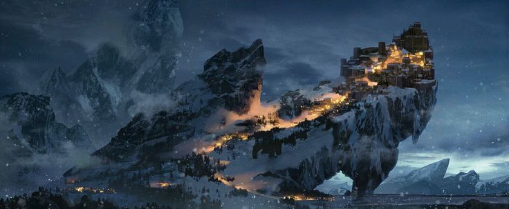
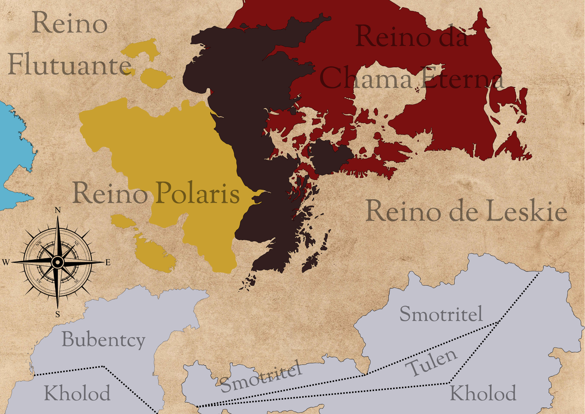

✦ os reinos ✦
🌊Onde o mar guarda a lembrança de quem incendiaram
Uma dívida jamais paga — o reino que nasceu de uma travessia pelo mar gelado, sustentado pela fome de um povo e pela culpa que esse mesmo povo carrega até hoje.
✦ história
O Reino de Leskie não nasceu de uma coroa, nem de uma conquista. Nasceu da fome — e de uma mãe que não soube dizer não a ela.
No princípio havia apenas Skadi, a Mãe Gélida, deusa primordial que reinava sobre as terras congeladas do norte. De seu sangue nasceram gêmeas, e a mais nova delas — Leskie — recebeu de sua mãe a tarefa de governar o sul, onde o gelo era mais cruel e a colheita, mais escassa.
Foi Leskie quem, vendo seu povo definhar de fome dentro das terras geladas, os conduziu para além delas — pelo mar, rumo ao desconhecido — em busca de um lugar onde a terra desse frutos sem exigir tanto em troca. E o mar cedeu. As terras que hoje formam o reino foram encontradas, colonizadas, cultivadas; a fome, finalmente, foi vencida.
Mas o povo salvo não soube carregar a gratidão por muito tempo. O sucesso da travessia — rápido demais, fácil demais para uma jovem deusa recém-encarregada de um povo faminto — despertou suspeita. Correu-se a voz de que Leskie teria feito um pacto com forças malignas para atravessar o mar gelado, e a suspeita virou acusação de heresia. Algumas famílias, entre elas os ancestrais da atual Casa Gvardiya, tentaram defendê-la publicamente — mas não foi o bastante.
O mesmo povo que ela salvara da fome a incinerou, na certeza equivocada de que se livrava de um mal. Só depois, tarde demais, entenderam o que haviam feito: elevaram Leskie a divindade, e o reino que ela havia fundado passou a carregar seu nome como penitência.
De sua chama nasceu Anno Selkie, filha direta da deusa, hoje rainha solitária e gentil que raramente se mostra ao povo — preferindo caminhar sozinha pelo litoral onde, segundo dizem, ainda é possível ouvir o mar repetindo o nome de sua mãe.
✦ cartografia

Bubentcy
Uma singela região coberta de gelo, porém a mais próxima do Reino Polaris e de seu calor — o que lhe rende um terreno fértil, raro em terras tão ao sul, dedicado ao plantio e à criação de animais. Governada pelos Duques da Família Guizos, é onde pastores conduzem rebanhos entre a neve e a fartura.
Smotritel
Sede das fortalezas reais do reino, onde soldados são forjados e a segurança de Leskie é pensada e regulamentada. Governada pela Família Gvardiya, guarda em seu nome a promessa silenciosa de que a história não vai se repetir.
Tulen
Capital do reino e sede da Dinastia Selkie. É lá que mora a rainha Anno Selkie, figura solitária e gentil que evita aparições públicas e prefere caminhar sozinha pelo litoral da cidade. Sua filha, a princesa Zuzen Selkie, vive de um jeito bem diferente — quase entre o próprio povo, com uma inocência de quem ainda não conheceu os males do mundo.
✦ elenco do reino
Inserir texto...
✦ tradições
Inserir texto...
LENDA
A deusa que atravessou o mar gelado para salvar seu povo da fome, e cujo nome o reino carrega desde então. Símbolo de sacrifício e de uma dívida que jamais se paga por inteiro.
HISTÓRIA
O julgamento que condenou Leskie por um pacto que ela nunca fez — e a fogueira que, tarde demais, o povo entendeu ter sido um erro.
TRADIÇÃO
Inserir texto...
CRENÇA
Inserir texto...